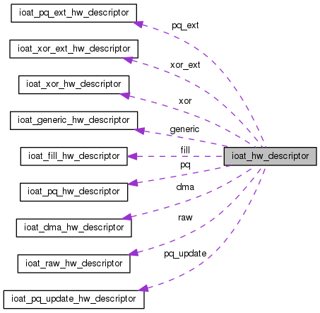

SPDK Userspace NVMe Driver
Main Page
Related Pages
Data Structures
Files
Data Structures
Data Structure Index
Data Fields
ioat_hw_descriptor Union Reference
Collaboration diagram for ioat_hw_descriptor:

[
legend
]
The documentation for this union was generated from the following file:
ioat_spec.h